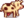
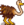

Stall
| Stall | Großer Stall | Luxus-Stall | |

|

|

| |
| Information | |||
| Voraussetzung | Nichts | Stall | Großer Stall |
| Baukosten | |||
| Baumaterial | |||
| Kapazität | 4 | 8 | 12 |
| Tiere |  Kuh Strauß | ||
| Grundfläche | 7x4
|
7x4
|
7x4
|
| Merkmale |
|
|
|
Der Stall ist ein Hofgebäude, kaufbar und erweiterbar von Robin im Schreinerladen.
Bau
Der Bau des Grundgebäudes dauert drei Tage. In dieser Zeit ist Robin weder ansprechbar, noch kann man ihr Geschenke überreichen. Der Ausbau in die höheren Stufen dauert jeweils zwei Tage. Währenddessen kann der Stall weiterhin wie gewohnt genutzt werden und es ist auch möglich, mit Robin innerhalb des Stalls zu kommunizieren.
Die Gesamtkosten eines von Grund auf neu gebauten Stalls bis hin zum Luxusstall belaufen sich auf  43.000 G
43.000 G  Holz (1350)
Holz (1350)  Stein (650).
Kauft man sämtliche Ressourcen von Robin, sind es
Stein (650).
Kauft man sämtliche Ressourcen von Robin, sind es  69.500 G in Jahr 1 bzw.
69.500 G in Jahr 1 bzw.  175.500 G in Jahr 2+.
175.500 G in Jahr 2+.
Nutzen
Der Stall beherbergt Kühe, Ziegen, Schafe, Schweine und Strauße. Sobald man durch den Ausbau des Stalls die jeweiligen Tiere zum Kauf freigeschaltet hat (siehe Infobox), können diese auch in normalen oder großen Ställen untergebracht werden. Durch das Öffnen der Stalltür können Tiere auf den Hof gelassen werden, bis sie abends (gewöhnlich zwischen 17:00 Uhr und 18:00 Uhr) wieder in den Stall zurückkehren.
Ähnlich dem Schuppen können in Ställen z.B. auch Kisten, Möbel, Geräte usw. aufgestellt werden. Die Tiere stören sich nicht daran.
Hinweis
Stalltiere können nachts draußen ausgesperrt werden, wenn die Tür zum Stall vor ihrer Rückkehr geschlossen wird. Ausgesperrte Tiere sind am nächsten Tag schlecht gelaunt und könnten im schlimmsten Fall sogar einer Wildtierattacke zum Opfer fallen. Um sicherzustellen, dass sich alle Tiere im Stall befinden, kann man zum Beispiel den Hof bei offener Stalltür verlassen und wieder betreten. Dabei werden alle Tiere in ihren jeweiligen Stall teleportiert, insofern bereits Zeit dafür ist.

Bilder vom Innenraum:

Stall Innenbereich

Großer Stall Innenbereich


{kind=link}
| Gebäude | ||
|---|---|---|
| Händler | Abenteurergilde • Anglerbedarf • Bruchbude • Buchhändler • Eisstand • Geheimes Walnusszimmer von Mr. Qi • Inselhändler • Joja-Markt • Kasino • Klinik • Kneipe • Marnies Ranch • Oase • Pierres Gemischtwarenladen • Reisewagen • Schmied • Schreinerladen • Turm des Zauberers • Vulkanzwerg • Wüstenhändler | |
| Häuser | Bauernhaus • Baumhaus • Bergstraße 24 • Elliotts Hütte • Flussstraße 1 • Flussstraße 2 • Haus des Bürgermeisters • Insel-Farmhaus • Leahs Hütte • Weidengasse 1 • Weidengasse 2 • Wohnwagen • Zelt | |
| Bauernhof Gebäude | Bauernhof | Brunnen • Fischteich • Gewächshaus • Hühnerstall • Hütte • Mühle • Pferdestall • Schleim-Stall • Schuppen • Silo • Stall |
| Spezial | Erdobelisk • Goldene Uhr • Hof-Obelisk • Insel-Obelisk • Junimo-Hütte • Wasserobelisk • Wüsten Obelisk | |
| andere Gebäude | Gemeinschaftszentrum • Hexenhütte • Hundehütte • Insel-Außenstelle • Joja-Warenhaus • Kanalisation • Kino • Museum • Spa | |